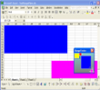
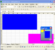

RangeFinder
The Excel RangeFinder lets you simultaneously pan and scroll Excel worksheets without the usual cumbersome horizontal and vertical scrolling. RangeFinder also provides a miniturised overview of the entire worksheet to provide landmarks and visual features to afford instant and easy navigation. Hosted on Google Code, you can download and modify the source code and use or modify it as you please.